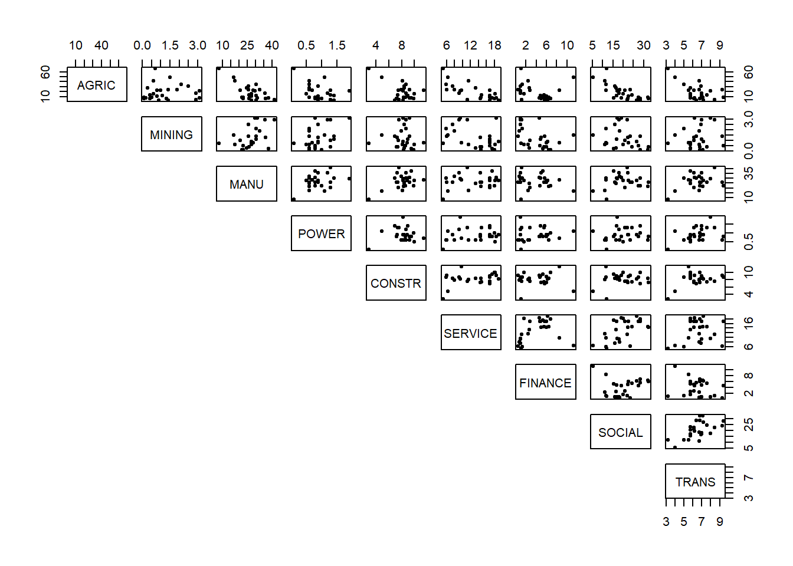
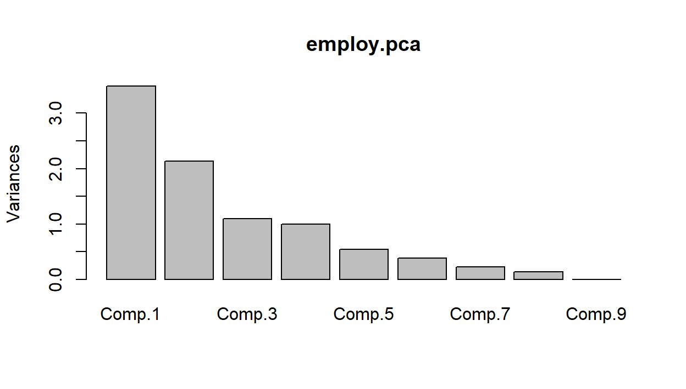
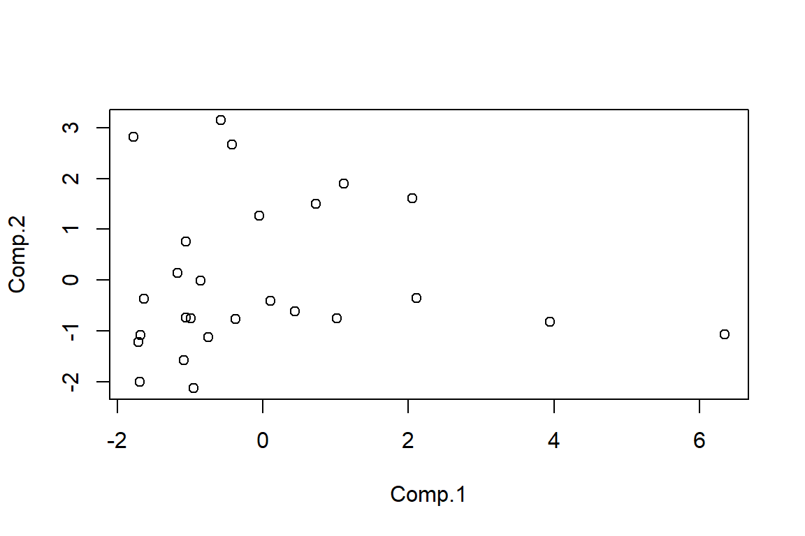

5 Solution
5.1 Exercise 1
Task 2. Looking at the Cumulative Proportion line we see:
for 80% we would only need 5 components
for 95% we would need 10 components.
Task 3. According to the new rule, we would obtain 6 components.
## logical(0)Task 4. Although there are a large number of positive and negative non-zero loadings, the really dominant ones in terms of size (approximately 0.6) are ash and alcalinity of ash, so this component mainly seems to be interested in ash and its properties in wine.
Task 5. To calculate the first component score
#By hand using R as a calculator
new.x<-matrix(c(12,4,3,25,100,2,1,0.4,2,4,1,2,600),nrow=1)
colnames(new.x)<-colnames(wine.new)
centre.wine<-wine.pca$center
scale.wine<-wine.pca$scale
first.load<-wine.pca$loadings[,1]
new.x.cent<-new.x-centre.wine
new.x.stand<-new.x.cent/scale.wine
new.x.stand%*%first.load## [,1]
## [1,] -1.852## Comp.1 Comp.2 Comp.3 Comp.4 Comp.5 Comp.6 Comp.7 Comp.8 Comp.9 Comp.10
## [1,] -1.852 0.1965 -2.91 -0.2902 -0.5356 0.105 -0.4886 0.1793 -1.297 -0.7005
## Comp.11 Comp.12 Comp.13
## [1,] 0.4829 0.16 0.7122We can see the answer by hand is the same as the first element of the predict result. If we were using PCA on the covariance matrix, we would skip the scaling stage (only centering before taking the inner product).
5.2 Exercise 2
- The following codes produce some numerical summaries.
# summary(employ)
library(skimr);library(knitr)
my_skim <- skim_with(base = sfl(n = length), numeric = sfl(p0 = NULL, p100 = NULL,
hist = NULL))
knit_print(my_skim(employ))| Name | employ |
| Number of rows | 26 |
| Number of columns | 9 |
| _______________________ | |
| Column type frequency: | |
| numeric | 9 |
| ________________________ | |
| Group variables | None |
Variable type: numeric
| skim_variable | n | mean | sd | p25 | p50 | p75 |
|---|---|---|---|---|---|---|
| AGRIC | 26 | 19.13 | 15.55 | 7.70 | 14.45 | 23.67 |
| MINING | 26 | 1.25 | 0.97 | 0.52 | 0.95 | 1.80 |
| MANU | 26 | 27.01 | 7.01 | 23.00 | 27.55 | 30.20 |
| POWER | 26 | 0.91 | 0.38 | 0.60 | 0.85 | 1.17 |
| CONSTR | 26 | 8.17 | 1.65 | 7.53 | 8.35 | 8.97 |
| SERVICE | 26 | 12.96 | 4.58 | 9.25 | 14.40 | 16.88 |
| FINANCE | 26 | 4.00 | 2.81 | 1.22 | 4.65 | 5.92 |
| SOCIAL | 26 | 20.02 | 6.83 | 16.25 | 19.65 | 24.12 |
| TRANS | 26 | 6.55 | 1.39 | 5.70 | 6.70 | 7.07 |
Comment: All variables are continuous variables, so it is suitable to apply PCA. The standard deviation vary across variables, which suggest that we should use the correlation matrix in PCA (This will be formally checked shortly).
The next step of exploratory analysis is to produce some graphical summaries. Here we could use the pairs plot in R.

Comment: There are a couple of possible outliers. (We'll leave these for the moment and see if they appear again in our scores plot in the end for whether we need to re-run PCA without them included.) The data doesn't appear to fall into groups. There seem to be some linear relationships between pairs of variables but they are not very strong.
- It's important to have a look at the correlation and variance of the variables.
## AGRIC MINING MANU POWER CONSTR SERVICE FINANCE SOCIAL TRANS
## AGRIC 1.00 0.04 -0.67 -0.40 -0.54 -0.74 -0.22 -0.75 -0.56
## MINING 0.04 1.00 0.45 0.41 -0.03 -0.40 -0.44 -0.28 0.16
## MANU -0.67 0.45 1.00 0.39 0.49 0.20 -0.16 0.15 0.35
## POWER -0.40 0.41 0.39 1.00 0.06 0.20 0.11 0.13 0.38
## CONSTR -0.54 -0.03 0.49 0.06 1.00 0.36 0.02 0.16 0.39
## SERVICE -0.74 -0.40 0.20 0.20 0.36 1.00 0.37 0.57 0.19
## FINANCE -0.22 -0.44 -0.16 0.11 0.02 0.37 1.00 0.11 -0.25
## SOCIAL -0.75 -0.28 0.15 0.13 0.16 0.57 0.11 1.00 0.57
## TRANS -0.56 0.16 0.35 0.38 0.39 0.19 -0.25 0.57 1.00## AGRIC MINING MANU POWER CONSTR SERVICE FINANCE SOCIAL TRANS
## 15.5 1.0 7.0 0.4 1.6 4.6 2.8 6.8 1.4Comment: There are some strong correlation (around -0.7) but a lot of weak (close to zero) correlations as well. It may be possible to achieve some dimension reduction here but not a lot. The variation for some variables is much bigger than for others, therefore we should use the correlation matrix and not the covariance matrix in PCA.
- We should use
princompwith the argumentcor=Tto perform PCA on the correlation matrix.
## Call:
## princomp(x = employ, cor = T)
##
## Standard deviations:
## Comp.1 Comp.2 Comp.3 Comp.4 Comp.5 Comp.6 Comp.7 Comp.8
## 1.867392 1.459511 1.048312 0.997238 0.737033 0.619215 0.475136 0.369851
## Comp.9
## 0.006755
##
## 9 variables and 26 observations.The summary function can give us information about how many components we should keep.
## Importance of components:
## Comp.1 Comp.2 Comp.3 Comp.4 Comp.5 Comp.6 Comp.7
## Standard deviation 1.8674 1.4595 1.0483 0.9972 0.73703 0.6192 0.47514
## Proportion of Variance 0.3875 0.2367 0.1221 0.1105 0.06036 0.0426 0.02508
## Cumulative Proportion 0.3875 0.6241 0.7463 0.8568 0.91711 0.9597 0.98480
## Comp.8 Comp.9
## Standard deviation 0.3699 6.755e-03
## Proportion of Variance 0.0152 5.069e-06
## Cumulative Proportion 1.0000 1.000e+00Looking at the Cumulative Proportion line, it is clear that we need to keep 5 components to retain 90% variability.
For Cattell's method we will need to produce a scree plot.

There are some different possibilities here, depending on how you read the graph. Suggesting 2, 4 or 6 components seems reasonable as that's where we see sudden drops/leveling off in variation.
- For Kaiser's method we need to look at finding the average eigenvalue to discover which set of components have variation above it that we will retain.
## Comp.1 Comp.2 Comp.3 Comp.4 Comp.5 Comp.6 Comp.7 Comp.8 Comp.9
## TRUE TRUE TRUE FALSE FALSE FALSE FALSE FALSE FALSEHere we have cheated a bit, since we know the average variance is going to be \(1\) whenever we use the correlation matrix. We can see that we would retain the first \(3\) components in this case.
- To interpret principal components, we look at the loadings from each component.
##
## Loadings:
## Comp.1 Comp.2 Comp.3 Comp.4 Comp.5 Comp.6 Comp.7 Comp.8 Comp.9
## AGRIC 0.524 0.213 0.153 0.806
## MINING 0.618 -0.201 -0.164 -0.101 -0.726
## MANU -0.347 0.355 -0.150 -0.346 -0.385 -0.288 0.479 0.126 0.366
## POWER -0.256 0.261 -0.561 0.393 0.295 0.357 0.256 -0.341
## CONSTR -0.325 0.153 -0.668 0.472 0.130 -0.221 -0.356
## SERVICE -0.379 -0.350 -0.115 -0.284 0.615 -0.229 0.388 0.238
## FINANCE -0.454 -0.587 0.280 -0.526 -0.187 0.174 0.145
## SOCIAL -0.387 -0.222 0.312 0.412 -0.220 -0.263 -0.191 -0.506 0.351
## TRANS -0.367 0.203 0.375 0.314 0.513 -0.124 0.545
##
## Comp.1 Comp.2 Comp.3 Comp.4 Comp.5 Comp.6 Comp.7 Comp.8 Comp.9
## SS loadings 1.000 1.000 1.000 1.000 1.000 1.000 1.000 1.000 1.000
## Proportion Var 0.111 0.111 0.111 0.111 0.111 0.111 0.111 0.111 0.111
## Cumulative Var 0.111 0.222 0.333 0.444 0.556 0.667 0.778 0.889 1.000Component \(1\) seems to be the difference between the average of manufacturing, power, construction, service, social and transporation industries, and the agricultural industry. So this new variable will distinguish between countries with agricultural economies and those with industrial economies.
Component \(2\) seems to be the difference between the average of mining, manufacturing, power and transportation industries, and the average of service, finance and social industries. So this new variable distinguishes between contries with relatively large and relatively small service sectors.
- The scatterplot of scores for the first \(2\) PCs is produced as follows.
employ.scores2<-as.data.frame(employ.pca$scores[,1:2])
plot(employ.scores2$Comp.1,employ.scores2$Comp.2,xlab="Comp.1", ylab="Comp.2")
There definitely seems to be an issue with at least one outlier. It would be worth identifying and removing it/them and re-running PCA to see if it affects the results.
- We can calculate the scores using the following code
#By hand using R as a calculator
centre.employ<-employ.pca$center
scale.employ<-employ.pca$scale
second.load<-employ.pca$loadings[,2]
obs1.cent<-obs1-centre.employ
obs1.stand<-obs1.cent/scale.employ
obs1.stand%*%second.load## [,1]
## [1,] -0.7608## [,1]
## [1,] -1.373#Using the predict command
newdata<-rbind(obs1,obs2);colnames(newdata)<-colnames(employ)
new.data<-as.data.frame(newdata);
new.data.scores<-predict(employ.pca,new.data)
new.data.scores[, 1:6]## Comp.1 Comp.2 Comp.3 Comp.4 Comp.5 Comp.6
## obs1 -0.989 -0.7608 -0.01662 -0.46329 -0.80507 0.03885
## obs2 -1.468 -1.3729 0.70027 0.02475 -0.03189 -0.660595.3 Optional: Implementing PCA using prcomp
The following code uses prcomp to analyse the turtle data.
#Setting the random generator seed to ensure similar responses when re-running code
set.seed(135)
#############################
#Principal Component Analysis
#############################
pca.turt.2<-prcomp(log.fem.turt[-10,]);pca.turt.2
####################################
#Deciding on number of PCs to retain
####################################
plot(pca.turt.2);summary(pca.turt.2)
sd.pca<-summary(pca.turt.2)$sdev
tot.var<-sum(sd.pca^2)
ave.var<-tot.var/ncol(log.fem.turt)
ave.var
sd.pca^2>ave.var
#######################################IT##############
#Interpreting the loadings and calculating new scores
#####################################################
pca.turt.2$rotation #loading matrix
# pca.turt.2$x #PC scores
new.data<-data.frame(log.length=c(4.8),log.width=c(4.7),log.breadth=c(3.9))
predict(pca.turt.2,new.data)The PCA results using princomp and prcomp are not too different.